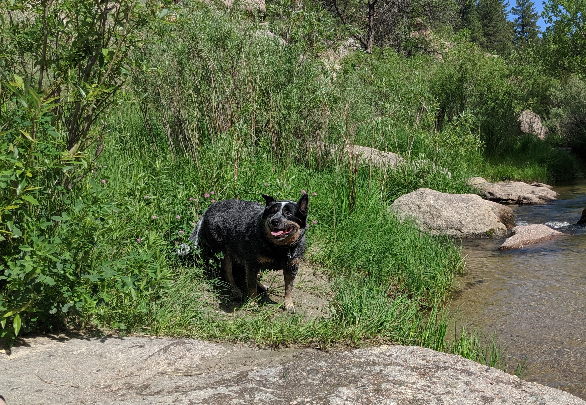

About Me
My name is Barbara Whiting. My mom and dad raised me first in Florida and then for the remainder of my school years in Michigan. Immediately upon becoming an adult I moved West to Colorado, so while I am not a native, I feel like one. I enjoy many things that Colorado has to offer such as hiking, biking the many trails, and winter activities as well. I am married and we have a 15 year old son, named Malcolm, who is learning to drive. We have two pets, an Australian Cattledog named Friday and a cat named Wednesday.
I am currently learning Full Stack Development through the Coding Bootcamp at Denver University. I am under the instruction of a fantastic teacher and three phenomenal TAs. ;) I am looking forward to all I will learn and the new career opportunities this will aford me.